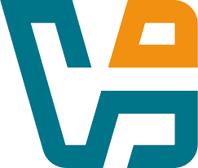

Mes Réalisations Professionnelles
Découvrez les projets que j'ai réalisés dans le cadre de mon BTS SIO option SISR
Infrastructure Linux TechNova
Déploiement de services réseau - Conteneur cab1
Objectif : Déployer une infrastructure réseau complète sur un poste Debian 12 en simulant l'environnement informatique de l'entreprise TechNova, avec gestion des services, des utilisateurs et des droits d'accès.
- Serveur web Apache2 — site intranet TechNova
- Serveur FTP vsftpd — transfert de fichiers sécurisé
- Serveur DNS BIND9 — domaine technova.local
- Gestion des utilisateurs alice et bob avec droits différenciés
- Permissions Linux — /srv/dev accessible au groupe dev uniquement
- Accès via nom de domaine : http://technova.local
Proxy filtrant Squid
Authentification et filtrage web — Conteneur cab1
Objectif : Déployer un proxy filtrant Squid dans un conteneur systemd-nspawn (cab1, IP fixe 10.63.101.70) hébergé sur PC2 Debian 12. Le proxy authentifie les utilisateurs et applique un filtrage d'accès différencié selon le profil.
- Conteneur cab1 avec IP fixe 10.63.101.70
- Superutilisateur projet2 — administration du conteneur
- Authentification Basic via htpasswd (toto / tata)
- Filtrage différencié par utilisateur (ACL Squid)
- Chaînage vers le proxy Tjener (10.0.2.2:3128)
- Tests curl depuis cab1 et depuis PC1
Compétences Validées
Ensemble des compétences techniques acquises durant ma formation BTS SIO et en autoformation
Administration des systèmes et des réseaux
Proxmox
Virtualisation de serveurs, création de VM, configuration de clusters, snapshots.
Cisco
Configuration routeurs, VLAN, adressage IP, routage statique/dynamique sur Packet Tracer.
VMware
Virtualisation d'environnements Windows/Linux pour projets personnels et laboratoire.

VirtualBox
Virtualisation d'environnements Windows/Linux pour projets personnels et laboratoire.

Docker
Conteneurisation d'applications, création d'images, gestion de conteneurs, docker-compose.
MySQL
Création de bases de données, gestion des utilisateurs, sécurisation, requêtes SQL.
DNS
Configuration de zones DNS, résolution de noms, intégration avec Active Directory.

DHCP
Attribution automatique d'adresses IP sur Windows Server et Debian.
Cybersécurité des services informatiques
Wireshark
Analyse du trafic réseau, observation de trames, détection d'anomalies.
Kali Linux
Autoformation au ethical hacking, tests basiques (Nmap, reconnaissance réseau).
VPN
Mise en place d'un VPN simple, concepts de chiffrement, tunnels, sécurité réseau.

Pare-feu
Configuration initiale de règles UFW/IPTables, en cours d'approfondissement.
Automatisation et scripting
Bash
Scripting Linux, automatisation de sauvegardes, tâches CRON, installation de paquets.
Python
Développement de petits outils/scripts, traitement de données, outils réseau.
PowerShell
Automatisation de tâches Windows, création d'utilisateurs, export CSV.
Développement web et mobile
HTML5 / CSS3
Interfaces web responsives, maîtrise des balises, flexbox, design de base.
PHP 7
Développement back-end avec MySQL pour projets de gestion de base de données.
SQL
Requêtes SQL, jointures et manipulation de données pour projets web.
Gestion de projet
Diagramme de Gantt
Planification de projets avec Trello.
Cycle de vie projet
Gestion du cycle de projet en entreprise pour solutions de gestion.
Distributions Linux
Ubuntu
Ubuntu est un système d'exploitation GNU/Linux basé sur la distribution Debian.
Debian
Serveurs LAMP, SSH, DNS, FTP, proxy etc...
Support et mise à disposition des services
Windows Server
Installation et configuration AD, DHCP sur VM.
Windows 11
Installation, configuration système, gestion comptes utilisateurs, dépannage.
Linux
Debian, Ubuntu, environnements virtualisés.
GLPI
Installation, configuration de base, gestion des tickets, inventaire de parc.

Active Directory
Création de comptes, groupes, stratégies de sécurité et GPO.
Bilan des Réalisations
Synthèse des Compétences Acquises
Ces projets couvrent l'ensemble des compétences attendues dans le BTS SIO, avec une spécialisation en infrastructure, systèmes et réseaux (option SISR). Chaque réalisation démontre ma capacité à :
- Analyser les besoins et concevoir des solutions techniques adaptées
- Implémenter des infrastructures complexes en respectant les contraintes de sécurité
- Documenter précisément les configurations et procédures
- Gérer un projet de A à Z avec méthodologie
- Adapter mes compétences à différents contextes techniques
Ces réalisations constituent une preuve concrète de ma capacité à pouvoir m'adapter au monde professionnel .